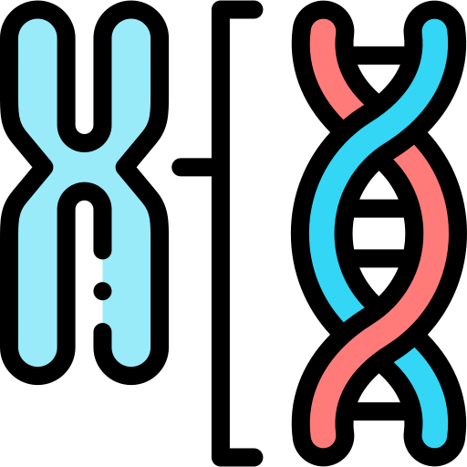
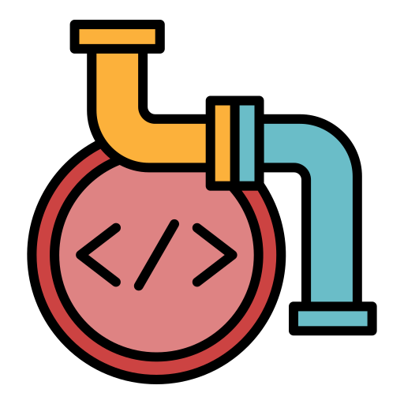

Areas of Expertise
Single-Cell and Spatial Transcriptomics
Profiling immune and tumor cell populations at single-cell resolution, mapping cell states, inferring differentiation trajectories, and placing transcriptional programs in spatial tissue context. Most of this work has gone directly into clinical findings.
Multi-Omics Integration
Combining transcriptomic, epigenomic, spatial, and proteomic data to get a complete picture of a biological system. The work spans cancer biology, immunology, and neurodegeneration — picking the right data types for the question, not just running everything available.
Translational Bioinformatics
Computational work that produces something a clinician or experimentalist can act on — a survival biomarker, a genotyping call, a target worth validating. This means staying in the loop with wet-lab and clinical collaborators from the start, not just handing off results.
Machine Learning in Genomics
Applying deep learning and statistical models where they genuinely help — learning cell state structure from high-dimensional omics data, predicting patient outcomes from gene expression, and modeling regulatory dynamics over time. Focused on biological interpretability, not just model performance.

Genome-Scale Metabolic Modeling
Simulating how an organism's metabolism responds to genetic changes, identifying which knockouts or overexpressions actually move the needle on yield, and feeding those predictions back into strain engineering. The goal is cutting down the number of experiments needed, not replacing them.

Pipeline Engineering and HPC
Building workflows that are containerized, version-controlled, and behave identically across local and cluster environments. Analysis at scale — thousands of samples, millions of cells — run on SLURM and AWS without breaking down or producing unreproducible results.
Work Experience
Bioinformatician, Translational Research
Singapore General Hospital – SingHealth | Dec 2025 – Present
Working on two parallel projects here. The first is characterizing how tumors undergo epithelial-to-mesenchymal transition in triple-negative breast cancer — using spatial transcriptomics alongside IHC and patient-derived xenograft data to understand where and why that happens in tissue, and what combination therapies can reverse it. The second is a genotyping pipeline for Alzheimer's risk stratification: automating APOE classification from qPCR data using probabilistic modeling, replacing a largely manual process that was error-prone across batches.
Bioinformatician
Ourobio | Jun – Nov 2025
Built the computational side of a microbial strain engineering workflow — genome-scale metabolic models that simulate how a microbe behaves under different genetic conditions, so the wet-lab team could prioritize which edits to actually try. Ran large libraries of knockout and overexpression scenarios on HPC to surface the handful of targets worth taking to the bench. Two of those predictions in PHA and indigo biosynthesis are now in experimental validation.
Research Assistant
Indiana University Bloomington | May 2024 – May 2025
This became a first-author paper. The work was understanding why some CML patients stay in remission after stopping treatment while others relapse — specifically looking at NK cell biology. I built GAFA, a pipeline that combined a variational autoencoder, generalized additive modeling, and patient-level random forests to analyze over 300,000 NK cells from 15 patient samples. It resolved six distinct NK cell states, identified which gene regulatory networks were active in each, and produced an 18-gene panel that predicts outcome at single-cell resolution with AUC 0.89.
Projects
GAFA — NK Cell Analysis in CML
A pipeline I built and published as first author. The question was why some leukemia patients maintain remission after stopping therapy and others don't. I processed 300K+ NK cells from 15 patient samples, combined deep generative modeling with interpretable statistical models, and mapped six functional NK cell states to patient outcomes. The result is an 18-gene signature that predicts relapse at single-cell resolution.

EMT Mapping in Triple-Negative Breast Cancer
Used NanoString CosMx spatial transcriptomics alongside IHC and PDX tumor data to characterize where and how tumors acquire mesenchymal identity. Found that VIM and CDH1 form a key regulatory axis driving that transition, identified CD44 as a spatial survival marker, and showed that combining LSD1 inhibition with checkpoint blockade substantially reduces the EMT-high tumor population.
Kinase–Phosphatase Dynamics in Yeast Respiration
Modeled how kinase-phosphatase signaling evolves during the yeast metabolic cycle using a temporal graph approach. Instead of treating the protein interaction network as static, I integrated time-series expression data to make the network dynamic, then used continuous-time Markov processes for link prediction. The model hit 100% Hits@20, a 30%+ improvement over static baselines.
STAT6 Inhibitor Discovery for Rheumatoid Arthritis
Built a computational drug screening pipeline to find selective STAT6 inhibitors. Screened over a million compounds using structure-based docking, filtered candidates with free-energy perturbation calculations, and validated stability through microsecond molecular dynamics. Identified three chemotypes with predicted binding affinity under 120 nM.
De Novo Genome Assembly — Beetle and Nematode Species
Assembled two non-model organism genomes from scratch using long-read PacBio HiFi sequencing and Hi-C chromatin contact data for scaffolding. Achieved near-chromosome-level assemblies with 95% BUSCO completeness, then annotated genes and ran comparative synteny analysis to place these species in broader evolutionary context.
APOE Genotyping Pipeline for Alzheimer's Risk
Automated a genotyping workflow that was previously done manually by clinicians reviewing qPCR curves. Used Gaussian mixture models to classify APOE alleles probabilistically, handling batch variation and ambiguous calls that tripped up rule-based approaches. Matched expert accuracy above 99% while cutting review time by 70%.
Skills
Omics Analysis
- Single-cell RNA-seq — clustering, trajectory inference, GRN reconstruction
- Spatial transcriptomics — NanoString CosMx, cell-type deconvolution, niche analysis
- Chromatin accessibility — ATAC-seq, ChIP-seq, peak-to-gene linking
- Genome assembly — PacBio HiFi, Hi-C scaffolding, BUSCO validation
- Variant calling — population genetics, GWAS/TWAS, allele-specific expression
- Bulk RNA-seq — differential expression, pathway enrichment, GSEA
Computational Modeling
- Genome-scale metabolic modeling — flux balance analysis, knockout/overexpression simulation
- Gene regulatory network inference — ensemble methods, patient-stratified GRNs
- Temporal graph modeling — dynamic PPI networks, link prediction
- Molecular docking and free-energy perturbation — virtual screening at scale
- Probabilistic classification — Gaussian mixture models, Bayesian approaches
Machine Learning
- Deep learning — variational autoencoders, graph neural networks, CNNs
- Supervised learning — random forests, gradient boosting, SVM, model interpretation
- Unsupervised learning — dimensionality reduction, clustering, latent space analysis
- LLM fine-tuning — domain adaptation for biological text and sequence data
- Frameworks — PyTorch, TensorFlow, Scikit-learn, PyTorch Geometric
Engineering and Infrastructure
- Languages — Python, R, Bash, SQL, PySpark
- Workflow management — Nextflow, Snakemake, reproducible pipeline design
- HPC — SLURM job scheduling, large-scale parallelization
- Cloud — AWS EC2, S3, SageMaker
- Containerization — Docker, environment reproducibility
- Visualization — R Shiny, ggplot2, matplotlib, seaborn
Wet Lab
- DNA / RNA extraction and QC
- qPCR — genotyping, expression quantification
- Western blotting, ELISA, gel electrophoresis
- MIC assays and antibacterial testing
- Protein docking and structural analysis
Education
M.S. Bioinformatics in Computer Science
Machine Learning in Bioinformatics
Data Science in RAMP
SNP Discovery in Population Genetics
Algorithms and Data Structures
Data Mining
Computational Modelling of Virtual Tissues
Data Visualization
Computer Vision
B.Tech Biotechnology — Genetics
Microbiology
Gene Manipulation and Editing
Immunology
Molecular Diagnostics
Bioprocessing
Molecular Biology
Biochemistry
Animal Biotechnology
Publications and Certifications
Borra S, Yan D, Welner RS, Yue Z. An AI-enabled single-cell transcriptomic analysis pipeline for gene signature discovery in natural killer cells linked to remission outcomes in chronic myeloid leukemia. 2025.
Single-cell profiling of NK cells in CML identifies distinct cell states with gene regulatory signatures associated with differential outcomes after imatinib discontinuation.